У нас есть склад стройматериалов для Windows, а также шаблоны для After Effects / Premiere Pro и
для Photoshop / Illustrator.
В каждом канале есть навигация с помощью тегов, например в AETemp вы можете отдельно найти звуки, переходы и плагины по тегам #звуки, #переходы, #плагин,
а в складе стройматериалов вы можете отдельно найти конкретную программу или плагин, например #aftereffects, #magicbullet, #borisfx или #twixtor.
Вы также можете поддержать
администратора каналов "склад стройматериалов" и "запчасти для форд фокуса", а также администратора каналов "AETemp" и "Design World".
Существуют множество сайтов с стоковыми видео, например Pexels, Pixabay, Videvo. Подробную подборку видеостоков вы можете посмотреть в этом сообщении.
У нас есть предложка, а также бот для срочной покупки шаблонов из Envato Elements (файлы из Videohive, Shutter Stock не принимаются), Freepik и Motion Array по низким ценам. Обратитесь в @HiStockBot.
Если вы просто хотите с азов изучить After Effects, то рекомендуем этот курс на YouTube. Если вы уже "не смешарик" в After Effects, то можно посмотреть каналы на Youtube, например Ben Marriot, VideoSmile или AEPlug.
Возможно, здесь будет какой-то текст. Наверное. Когда-нибудь...
Потому что бот реагирует на упоминание некоторых пользователей. И не всем администраторам нравится упоминание по лишнему поводу, особенно по вопросам "А @username может ты знаешь ответ??" и т.д..
Если в чате происходит п%$@!ц, то
вы можете написать /report в ответ на сообщение.
В Telegram есть хороший инструмент поиска чатов, следует ознакомиться. Вы можете написать запрос в поиске "Blender Chat" для вопросов по Blender, "Cinema 4D Chat" для вопросов по C4D или "Technical Chat" для вопросов по железу. Предоставление ссылок на другие каналы или чаты, не относящиеся к нам карается пунктом 6 правил. Срок и тип наказания зависит от настроения администрации.
Нет, пока люди не научатся излагать свои мысли в одном сообщении.
Вариантов, если честно, много. Проверьте ваш ПК на соответствие минимальным требованиям к программе, а также к используемым сторонним плагинам. Также вероятно, что вы накидали кучу разных эффектов от разных разработчиков, которые могут замедлять рендер друг другу (этим часто страдают новички в данной программе), используете неоптимизированные исходники и не соблюдаете "гигиену" проекта. Никто 3всерьёз не будет монтировать или композить .mp4 файлы. Для оптимизации вашей же работы - попробуйте перекодировать исходники в .mov (например, в ProRes 422) через Media Encoder или Shutter Encoder, заменить эффекты на более легковесные, использовать прокси-файлы для исходников или композиций.
Проверьте ваше окно Preview. В нём должно стоять FPS на Auto, а также стоять две галочки про кэш (Cache before playback и If caching, play caching frames). Благодаря этому ваш предпросмотр будет проигрываться из кэша, а не в режиме реального времени и записываться на диск или оперативную память, в зависимости от того, включен ли кэш.
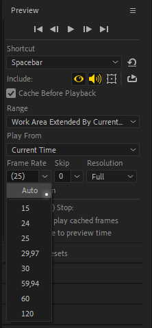
Если у вас достаточное количество ОЗУ или у вас проблемы с записью кэша на диск, вы можете отключить кэширование в настройках.
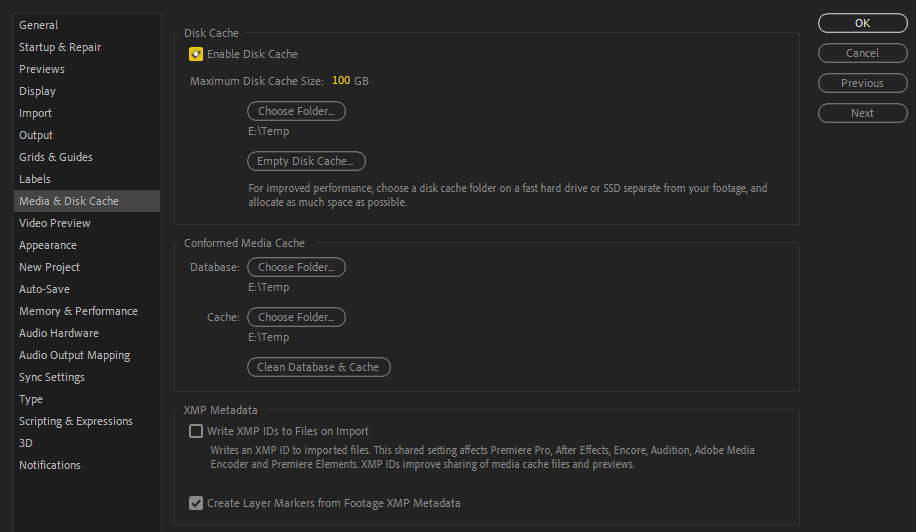
Скорее всего идёт речь об FXConsole от VideoCopilot.
After Effects до сих пор не умеет в полную меру использовать GPU, даже если эффекты могут поддерживать его и After Effects не обязан использовать видеокарту. Все действия над видео и эффектами происходят с приоритетом на процесссор, особенно если
вы используете множество разных плагинов от различных компаний, которые могут поставить крест на вашем GPU-рендере.
Но есть один из способов ускорения рендера - это включить Multi-Frame Rendering в настройках After Effects (возможны
побочные эффекты в зависимости от ПК), благодаря этой функции процессор будет "долбиться" в сотку за счёт параллельного рендеринга следующих кадров (вместо одного кадра попутно будут рендериться и следующие несколько кадров в зависимости от нагруженности
проекта), либо заранее рендерить прокси-файлы в полном качестве для композиций и использовать их при финальном рендере. Про использование прокси-файлов расписано в пункте 5.4.
Вы можете прочитать про нововведения и баги After Effects и про нововведения и баги Premiere Pro на официальном сайте Adobe и сформировать своё собственное мнение.
Для начала дублируем старую папку Adobe After Effects 20XX в C:\Program Files\Adobe. После дублирования, меняем название старой версии на ту, которую вы хотите установить. Потом запускаем установщик новой версии и устанавливаем поверх
дублированной папки.
При возникновений проблем после этого способа, рекомендую начать чистую установку.
Вы смотрите обучающее видео в старой версии программы. В новых версиях After Effects обновили логику Alpha/Luma Matte. О нововведениях этой функции вы можете почитать на официальном сайте Adobe.
Mocha AE - это урезанная версия Mocha, которая поставляется вместе с After Effects. В ней отсутствуют многие функции Pro-версии, например стабилизация. Про различия можно почитать на официальном сайте BorisFX.
Нажмите [ или ] на вашей клавиатуре для перемещения вашего слоя перед плейхедом или после плейхеда.
И не поставите, пока не поймёте принцип всех программ для композитинга. Плейхед показывает то, что находится впереди его пути. Вы можете поставить вручную плейхед через таймкод на нужную секунду, только вы не увидите в своём предпросмотре ровным счётом ничего.
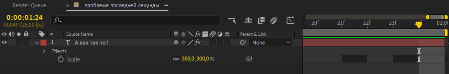
Вы, возможно, пытаетесь отредактировать график значений в двух осях, а они не поддерживают изменение с помощью безье. Воспользуйтесь другим типом графика, сменив его с помощью ПКМ по пустому месту в Graph Editor или с помощью второй кнопки снизу. В качестве альтернативного решения, вы можете разделить оси при помощи ПКМ по Position вашего слоя > Separate Dimensions.
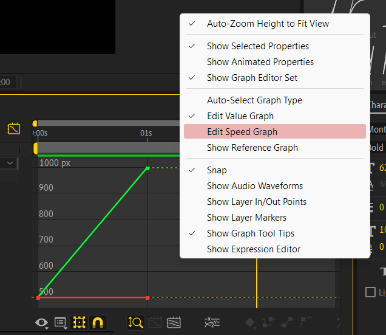
Если вы пришли из TikTok, насмотревших всяких туториалов формата "как всё легко и просто" в After Effects, чтобы делать эдиты - мои соболезнования, если вы будете крутить Unsharpen Mask и Sharpen бездумно, имея плохой исходник. Один из хороших способ увеличения качества вашего исходника - это делать upscale видео с помощью стороннего софта, по типу Topaz Photo / Video AI, или с помощью сторонних плагинов, например BorisFX Continuum, в который завезли новый upscaler. А вот к способам всяких "крутых эдиторов", которые воруют "секреты" друг у друга, я бы прислушиваться не стал, только если ради ознакомления или вдохновения.
А я бы всё-таки обратился к пункту 4.1 про смену языка, это решит многие проблемы, особенно если вы решили повторить что-либо через туториал. В интернете существуют таблицы переводов эффектов, например список перевода эффектов от AEPlug.
Вы можете воспользоваться сервисом en.likefont.com для нахождения шрифта по фото. Данный сервис находит шрифты на латинице и кириллице.
Для возвращения старого меню экспорта (работает не во всех версиях и только через Ctrl + M) в Premiere Pro, вы можете открыть консоль путём нажатия комбинации клавиш Ctrl + F12, затем нажмите на три полоски рядом с названием окна и выберите Debug Database View. Далее - листаем до Export.Settings.LaunchAsMode и вместо true пишем false. Если этого пункта нет, либо прописываем его вручную в C:/Users/%username%/Documents/Adobe/Premiere Pro/XX.X/Debug Database.txt, либо тихонько плачем в подушку, ведь прошлое уже не вернуть...
Чистим кэш через Edit > Purge > All Memory and Disk Cache и проверьте, что ваша рабочая область выделена не меньше, чем на два кадра. А потом пробуем кэшировать предпросмотр по новой. Если всё также не идёт, то пересмотрите свои эффекты, где-то ваш ПК захлёбывается на конкретном эффекте (особенно, если вы накидали кучу эффектов из разных паков и они не могут переварить друг друга)
Попробуйте отключить пункт Enable hardware accelerated decoding в настройках (Edit > Preferences > Import). Если не помогло - перекодируйте ваши футажи в другой кодек (например, ProRes 422).
Наверняка, вы используете исходник от iPhone или от камеры, которая пишет видео в HLG. Для этого установите Premiere Pro 23.2 и выше, прожмите в настройках секвенции Auto Tone Map Media или перекодируйте исходники в другой цветовой профиль. Подробности вы можете прочитать в этом сообщении.
Нет. Вы можете отключить это окно предупреждения в Edit > Preferences > Startup > Repair > Show System Compatibility Issues.
(на старых версиях After Effects этот пункт расположен в пункте General, а в Premiere Pro отключается также
в Edit > Preferences > General)
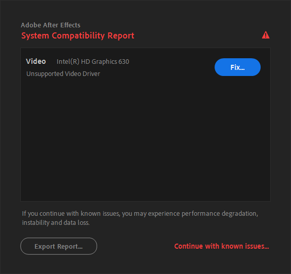
Если вы используете эффект по типу Motion Tile или CC Repetile, то вам говорят, что у вас после этих эффектов получилось слишком большое изображение, которое After Effects не способен переваривать. 30000 пикселей на каждую ось - это реальное ограничение по размерам изображения или видео.
Нет. Данное предупреждение означает, что у вас установлена очень старая версия определённого плагина, которая не поддерживает функцию мультипоточного рендеринга, которую вернули в After Effects 2022 и выше. Вы можете это окно проигнорировать, но если вас так напрягает треугольник возле названия плагина и предупреждение, то вам необходимо найти новую версию плагина или отключить мультипоточный рендеринг в настройках After Effects.
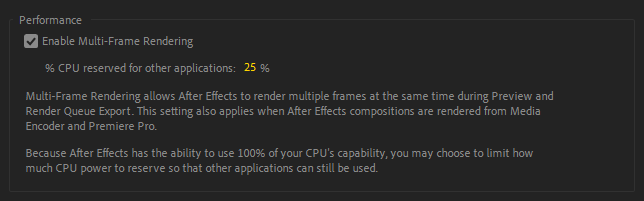
Если у вас установлен After Effects на языке, отличном от английского (например, на кириллице), то время менять язык.
Для быстрой смены языка After Effects на английский язык вы можете создать пустой текстовый документ с названием ae_force_english.txt и поместить в папку Документы вашего пользователя.
Если не помогло, то переименуйте файл after_effects_ru_RU.dat, находящийся на пути
C:\Program Files\Adobe\Adobe After Effects
20XX\Support Files\Dictionaries\ru_ru на after_effects_en_US.dat
Если вы хотите поменять язык в Premiere Pro на английский, то вы можете открыть консоль путём нажатия комбинации клавиш Ctrl + F12, затем нажмите на три полоски рядом с названием окна и выберите Debug Database View. Далее - листаем до ApplicationLanguage и вместо вашего языка пишем en_US.
Я уверен, что в 98% случаев, вы
не распаковали файл шаблона в любую
директорию
, а просто сразу открыли .aep файл, надеясь на то, что всё будет ОК. Архиватор не распаковывает все файлы при открытии .aep в временную директорию %temp%, а After Effects не понимает откуда
брать ему файлы-исходники. Поэтому для корректной работы шаблона - распакуйте полностью шаблон в удобное место.
Если вы распаковали шаблон вместе с исходниками, а файлы всё ещё не подключились автоматически - подключите их вручную.
Нажмите на любой потерянный файл в окне Project (потерянные файлы Вы можете найти, введя в поиск Missing Footage) правой кнопкой мышки, затем
Replace Footage > File... и выберите потерянный файл. Если все файлы проекта лежат в одной папке, то остальные файлы должны подтянутся автоматически.
Эти файлы были созданы для обхода ограничения Telegram в 2 и 4 ГБ для загрузки. Для корректной распаковки файлов, необходимо скачать WinRar, а также все части файла из конкретного поста. После скачивания всех частей, откройте первым делом файл с суффиксом .part1 и переместите файлы в удобное место. Если в архиве находится .exe файл для установки, достаточно открыть его и архиватор (в случае, если вы используете WinRar) распакует остальные файлы за вас.
Либо вы отключаете Windows Defender или другой установленный антивирус на вашем ПК и наслаждаетесь работоспособностью пакетов, либо вы покидаете этот ресурс и оформляете подписку или приобретаете определённую программу за свои кровные деньги. В репаках от Кролика антивирусы часто ругаются на файл helper.exe (может помечаться как HackTool или иначе), который распаковывает файлы для обхода проверки лицензии и антивирусы ругаются на наличие галочки с рекламой перед установкой (помечается как AdWare, при снятии галочки рекламы перед установкой, ничего лишнего в систему не устанавливается).
Данная ошибка появляется, если ваш антивирус решил съесть helper.exe, который является распаковщиком файлов определённого дистрибутива. Самый простой способ - отключение вашего антивируса на время установки. В случае возникновении проблем, поместите %temp% вашей системы в белый список антивируса на время.
Вы используете ZXP Installer курильщика, а нужно использовать ZXP Installer от aescripts (нормального человека). Если вы не желаете использовать сторонний софт, то вы можете переименовать .zxp в .zip и распаковать плагин в C:\Program Files (x86)\Common Files\Adobe\CEP\extensions.
Вы не применили .reg файл из архива, либо он устарел. Воспользуйтесь решением из чата для Windows (решение для Mac OS). Если после применения .reg файла ничего не появляется, убедитесь в том, что версия скрипта поддерживает вашу версию After Effects .
А вы уверены, что у вас After Effects установлен в путь по умолчанию? Нет? Переустанавливайте After Effects в путь по умолчанию или ищите остатки установщика и раскидывайте в свои папки.
Просто установите полную версию Cinema 4D 2024 (для After Effects 24.1+) или Cinema 4D 2023 (для After Effects 23.1-24.0) или Cinema 4D R25.117 (для After Effects ниже 23.1) из склада стройматериалов.
Если в архиве находится .aep или .mogrt файл, то оно не устанавливается в директорию программ. Эти файлы импортируются напрямую в ваш проект, как композиции.
Если в архиве находится .aex файл,
то такие файлы распаковываются в общую папку плагинов
C:\Program
Files\Adobe\Common\Plug-ins\7.0\MediaCore.
Если в архиве находится .jsx файл, то такие скрипты распаковываются в папку
C:\Program Files\Adobe\Adobe After Effects 20XX\Support
Files\Scripts, а если .jsxbin, то в дополнительную папку
ScriptUI
Panels.
Если в архиве находится .zxp файл, но вы не желаете устанавливать
ZXP
Installer
, то переименуйте этот файл в .zip и распакуйте содержимое в
C:\Program Files (x86)\Common Files\Adobe\CEP\extensions и примените
.reg файл, если имеется в архиве.
Если в архиве находится .ffx файл, то такие пресеты распаковываются в папку
C:\Program Files\Adobe\Adobe After Effects 20XX\Support
Files\Presets.
Файл шаблона будет сконвертирован и продублирован для работы на вашей версии After Effects, а оригинальный файл останется без изменений. Такое часто случается при обновлении с одной версии на другую.
Если вы до сих пор не освоили переводчик, то сообщу - файл был создан в более новой версией After Effects и не будет открываться на Вашей старой версии After Effects. Просите у автора проекта или прохожих людей пересохранить .aep файл через File > Save As > Save Copy As XX.X или обновите After Effects. Про перенос плагинов на новую версию всё расписано в пункте 2.4.
Забыть о его существовании на нелегальных версиях долгое время. Это серверная функция и она обрабатывается на серверах Adobe. Единственное решение на данный момент - это оформление подписки Creative Cloud или использование плагинов для соединения Photoshop и Stable Diffusion (необходим мощный ПК)
А языки скачивать кто будет? Поищите в складе языковые пакеты по тегу #speechtotext и скачайте нужные вам языки. Ещё советую приглянуться в сторону Subtitle Edit и генерации текста на основе Whisper
Просто откажитесь от его использования, удалив его из системы. Если вам так срочно нужен конкретный шрифт, перекачайте его из другого источника или переконвертируйте шрифт в .ttf, ибо в некоторых шрифтах могут быть ошибки, которые будут ломать приложения Adobe.
Шрифт не поддерживает кириллицу, находите альтернативную версию.
Если вас стандартный способ удаления программы через "Панель управления" вас не устраивает, то вы можете воспользоваться Revo Uninstaller или официальным инструментом для удаления от Adobe.
Для исключения многих ошибок с рендером, советую отказаться от Media Encoder в пользу плагинов AfterCodecs, Voukoder или нового встроенного H.264.
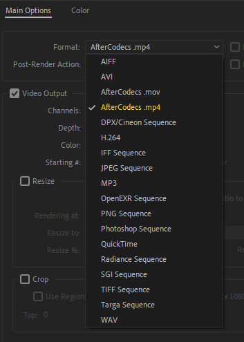
Для начала покажем на примере встроенного H.264. При его выборе, появляется рядом кнопка Format Options, там же и выставляется битрейт, который влияет на качество выходного файла.
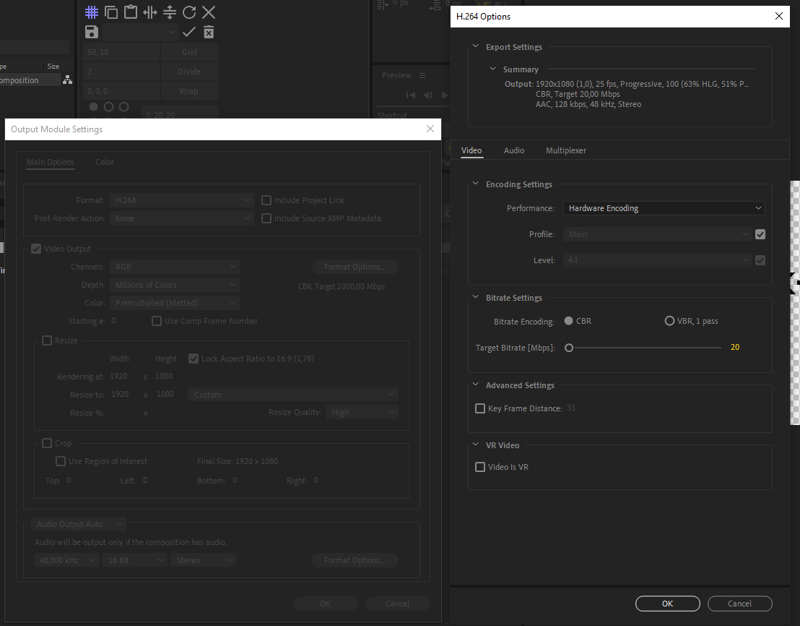
Битрейт — основополагающий параметр сжатия видео. Он выражает общую степень сжатия потока и тем самым определяет размер требуемого канала передачи данных.
Чем выше битрейт, тем больше деталей видеоизображения
удается сохранить, и тем реалистичнее выглядит видео. Для Instagram* Reels и Stories достаточно и 5 Mbps (в зависимости от контента), что рекомендуется неподтвержденными источниками, но также протестировано лично командой
AEChat. В теории, Instagram* меньше всего захочет шакалить ваше видео, если у неё малый битрейт, а цифра 5 - это компромисс между желанием сохранить качество и убедить платформу не сжимать дополнительно уже сжатый видеофайл.
В идеале, чтобы
сохранить место на диске и получить видео сносного качества стоит выставлять выше 15-20 Mbps для разрешения 1080p.
А как насчёт AfterCodecs? Его тоже можно выбрать в качестве формата и открыть его окно. Тут аналогичные настройки для рендера.
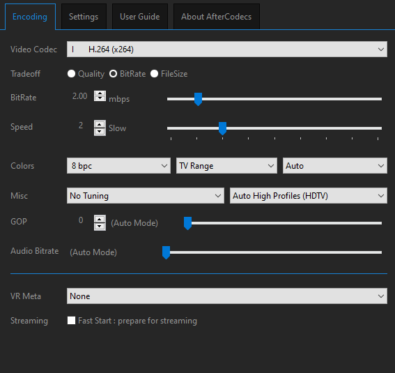
Баг конкретных версий After Effects, Premiere Pro и Media Encoder. Либо используйте AfterCodecs или Voukoder, либо не выводите ваши видео в путь с кириллицей. Данный баг исправили в последних релизах Adobe, поэтому рекомендуем обновиться.
Вы скорее всего пытаетесь отрендерить видео в AVI без сжатия, который установлен по умолчанию, не вникая в его суть его существования. Используйте другие варианты кодеков для рендера (Quicktime или H.264), подробнее о рендере расписано в пункте 5.1.
Если у вас есть проблемы именно с конкретным участком видео, вы можете сделать прокси-файл для конкретной композиции, а потом использовать его в финальном рендере.
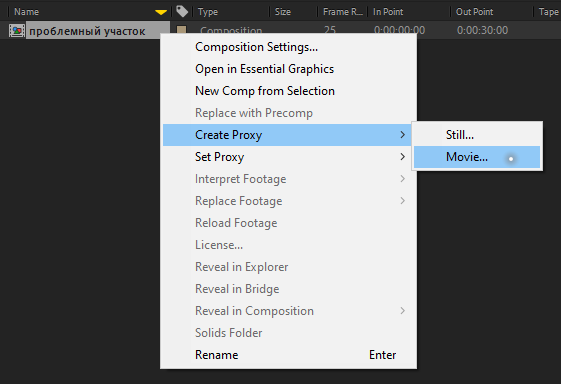
После успешного создания прокси-файла, не забудьте указать использование прокси-файлов в финальном рендере
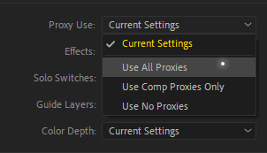
И не получится, MP4 не может иметь альфа-канал (за исключением HEVC H.265 на Mac OS, но мы это опустим). Перед рендерингом видео с альфа-каналом, убедитесь что ваша композиция действительно имеет альфа-канал.
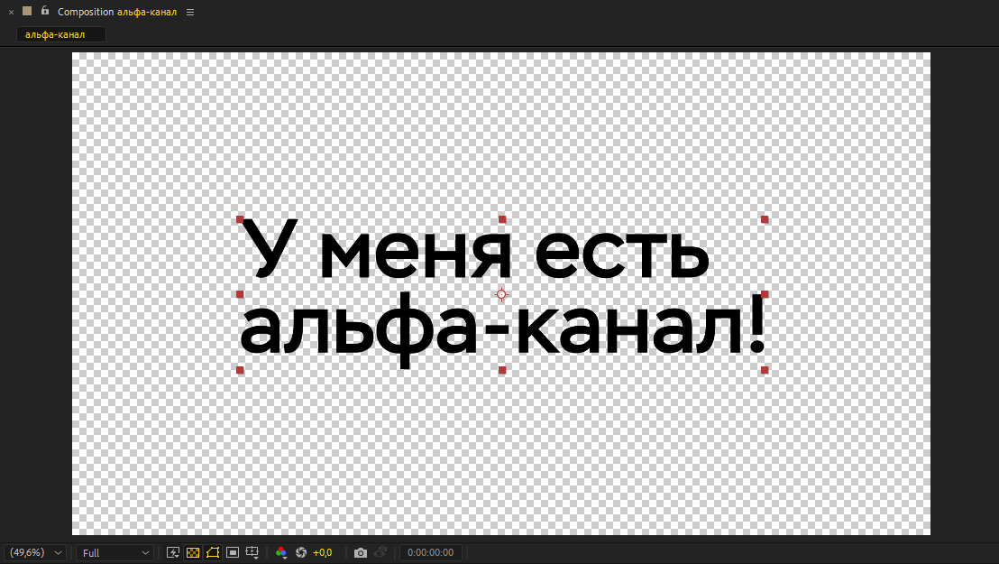
Если всё хорошо, отправляйтесь в Render Queue. Откройте пункт Output Module, выберите в пункте Format Quicktime, в кнопке Format Options выберите в пункте Video Codec Apple ProRes 4444 или GoPro Cineform. После этого выберите в пункте Channels RGB + Alpha. После всех вышеперечисленных выкрутасов, вы можете вывести видео с альфа-каналом.
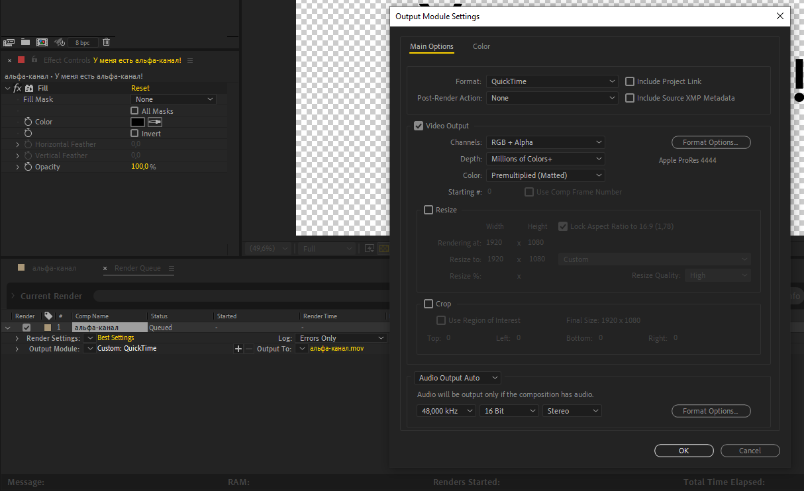
Если у вас видео после рендера не открывается в плеере, установите сторонний плеер, например VLC или MPC-HC.
Обновите программы (AE, ME и PP) до последних версий. Это баг некоторых версий в пределах 23.1 - 23.5.
Воспользуйтесь плагином Autokroma Influx. Он помогает импортировать некоторые неподдерживаемые файлы в After Effects, Media Encoder или Premiere Pro. Если это не поможет - перекодируйте исходники через Shutter Encoder.